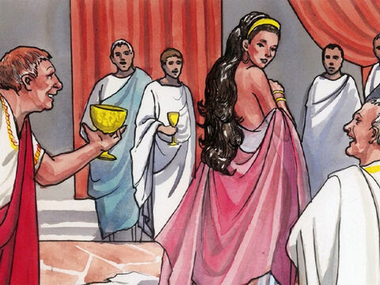
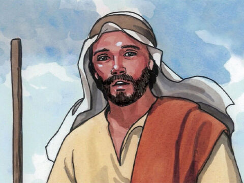
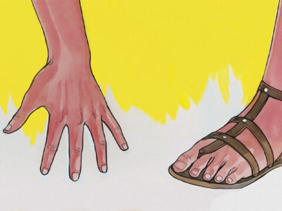
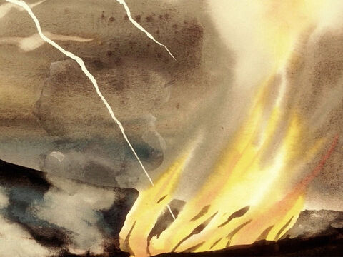

The Sermon On The Mount: Adultery
Ye have heard that it was said by them of old time, Thou shalt not commit adultery:
But I say unto you, That whosoever looketh on a woman to lust after her hath committed adultery with her already in his heart.
And if thy right eye offend thee, pluck it out, and cast it from thee: for it is profitable for thee that one of thy members should perish, and not that thy whole body should be cast into hell.
And if thy right hand offend thee, cut it off, and cast it from thee: for it is profitable for thee that one of thy members should perish, and not that thy whole body should be cast into hell.
Matthew 5:27-30
- 
- 

- 
- 